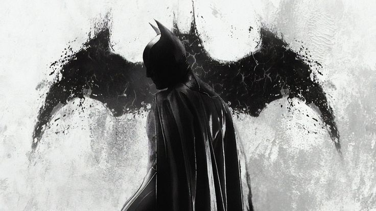

Rich Superhero:BATMAN
Mengenal latar belakang BATMAN


simbol ini digunakan oleh batman untuk menakuti para penjahat.Ia terinspirasi oleh kelelawar yang masuk ke rumahnya, lalu menjadikannya ikon.
Nama aslinya Bruce Wayne, merupakan anak tunggal dari keluarga kaya raya di Gotham City, juga seorang pewaris perusahaan besar Wayne Enterprises
Batman memiliki trauma masa kecil dimana ia menyaksikan orangtuany dibunuh oleh seorang perampok ketika mereka keluar dari teater.Dari trauma inilah Bruce bersumpah akan mengabdikan dirinya untuk memerangi kejahatan agar tak ada anak lain yang merasakan penderitaan seperti dirinya.